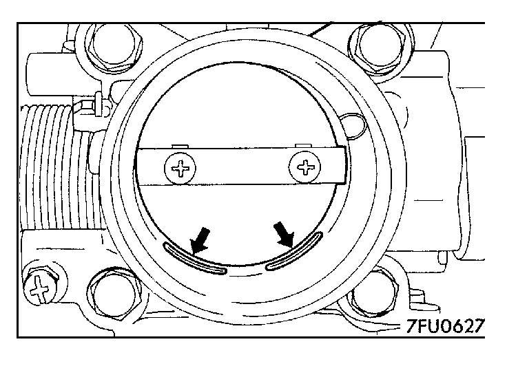

![[Previous]](https://mitsubishitechinfo.com/data/F24S/BUTTONS/fprevg.png)
![[Next]](https://mitsubishitechinfo.com/data/F24S/BUTTONS/fnextg.png)


ON-VEHICLE SERVICE
THROTTLE BODY (THROTTLE VALVE AREA) CLEANING
1.Start the engine and warm it up until the coolant is heated to 80°C (176°F) or higher and then stop the engine.
2.Remove the air intake hose from the throttle body.
3.Plug the bypass passage inlet (arrow) of the throttle body.
Caution
Do not allow cleaning solvent to enter the bypass passage.
4.Spray cleaning solvent into the valve through the throttle body intake port and leave it for about 5 minutes.
5.Start the engine, race it several times and idle it for about 1 minute. If the idling speed becomes unstable (or if the engine stalls) due to the bypass passage being plugged, slightly open the throttle valve to keep the engine running.
6.If the throttle valve deposits are not removed, repeat steps 4 and 5.
7.Unplug the bypass passage inlet.
8.Attach the air intake hose.
9.Use the scan tool to erase the diagnostic trouble code.
10.Adjust the basic idle speed. (Refer to  .)
.)
NOTE
If the engine hunts while idling after adjustment of the basic idle speed, disconnect the (-) cable from the battery for 10 seconds or more, and then reconnect it and run the engine at idle for about 10 minutes.